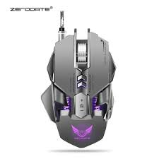

Mouse
Uses a LED light to detect movement on surfaces. Suitable for most surfaces and generally provides good precision. Uses a laser for tracking, allowing for higher sensitivity and better performance on a wider range of surfaces. Often has higher DPI (dots per inch) settings, making them ideal for gaming or design work. Uses a ball inside the mouse to detect movement (now largely obsolete). Track movement based on the rotation of the ball. Connects to the computer via Bluetooth or a USB receiver. Offers mobility and reduces cable clutter but occasionally requires battery replacements. Specifically designed for gamers, often featuring high DPI settings, customizable buttons, RGB lighting, and ergonomic designs. May come with software to set profiles and macros. Designed to reduce strain on the hand and wrist. Features a large ball on top or the side that the user rotates to move the cursor. Great for users with limited desk space and those who require precise control. A pen-like input device mainly for graphic design and drawing. Offers pressure sensitivity and often includes additional buttons for various functions. Key Features: DPI (Dots Per Inch): A measure of sensitivity. High DPI provides greater sensitivity and faster cursor movement. Gaming mice often have adjustable DPI settings.